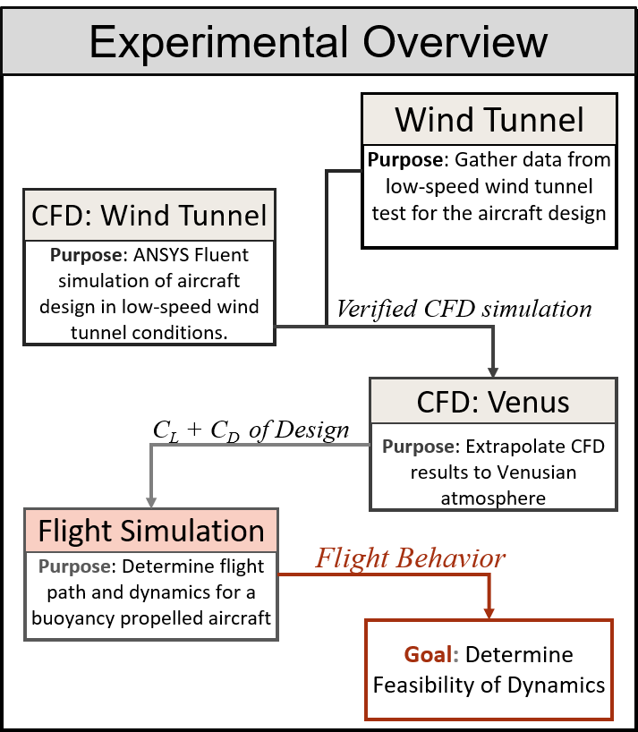

Buoyancy Propelled Venus Aircraft
Exploring using a buoyancy propelled aircraft for Venus exploration

Venus Aircraft
For my capstone project during my senior year at Ohio State, we worked with NASA Glenn Research Center on developing ideas for a Venus Aircraft which would be used to explore the upper atmosphere. The density of the Venusian atmosphere at the surface is significantly higher than Earth's atmosphere, with incredible pressure and temperature as well. Since air density decreases as you rise in altitude, there is a region around 50km that is has a similar density and pressure to Earth at sea level.
Since Venus is the planet with the most similarities to Earth in our solar system, it has high scientific value. The dense atmosphere and distance to the sun leads to extreme global warming and provides valuable insight into understanding the late stages of climate change here on Earth. The region around 50km is ideal for exploration since it is similar to Earth's atmosphere in pressure and temperature, and is believed to have a higher probability to contain life.
Design
Our suggested design was inspired by ocean gliders, small underwater crafts which uses buoyancy changes to continuously glide through water. Following the same idea, we asked if it was possible to use this same technique but in the denser atmosphere of Venus. The design uses inflatable lungs that are able to change the displaced volume of air which changes the buoyancy force of the aircraft. This can be controlled in such a way to allow the aircraft to glide upwards and downwards, being driven by the upwards buoyancy force.
Enclosing the internals with a symmetric frame and cover would allow the aircraft to have a constant aerodynamic shape. The angle of attack can be controlled through the buoyant force coming from the two lungs, adjusting the moment acting on the aircraft. Solar panels will provide near constant power source. Relying on buoyant forces would also provide redundancy not present in a fixed wing aircraft, since the system is tolerant to stalling. Even in the case of the inflating/deflating system failing, the aircraft will remain operational and in the air but just lack control ability.
Feasibility Study
To determine if this design works at a much lower density than water, we set out to explore the overall feasibility of this system. The meridional winds (East-West) are high, and would be very unlikely that the aircraft would be able to overcome them. However, the Zonal winds (from Equator to the poles) are much lower and more reasonable to overcome. If the system were to use the meridional winds to travel around Venus, if it can overcome the Zonal winds it would be able to change its latitude.
 The overall process starting with creating a 3D printed model, which was placed inside a low speed wind tunnel. Limited to 40 m/s with a scale model, it was difficult to match the Reynold's number of the flow expected on Venus. This model was compared to a CFD analysis using Fluent which validated the CFD simulation of the aircraft's body. Then the model was extrapolated to the denser atmosphere of Venus finding the lift and drag characteristics.
These lift/drag curves were used in a SIMULINK simulation which modeled a buoyant aircraft's motion. This was ultimately used to find a sample flight path by applying a control system which glides the aircraft forward as it changes its buoyancy.
Conclusion
I worked heavily on the Ansys Fluent analysis and the MATLAB simulation, will helping on many of tasks throughout the project. I also helped with planning and operating the wind tunnel tests and data collection, which was a very fun experience to get the opportunity to use the wind tunnels at OSU. The overall project was also a great opportunity to work on a larger scale project within a team. This definitely gave good experience with project management and communication to team members, as the project encompassed many different aspects.
Fortunately, I was able to present our material at the IAC 2020, and publish a conference paper which was a really cool experience. You can find the paper as well as the video presentation as part of their proceedings as Buoyancy Propelled Aircraft for Venus Exploration or IAC-20.A3.5.5